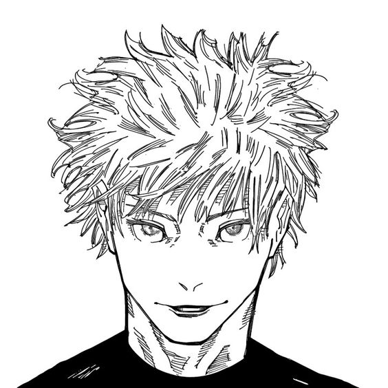
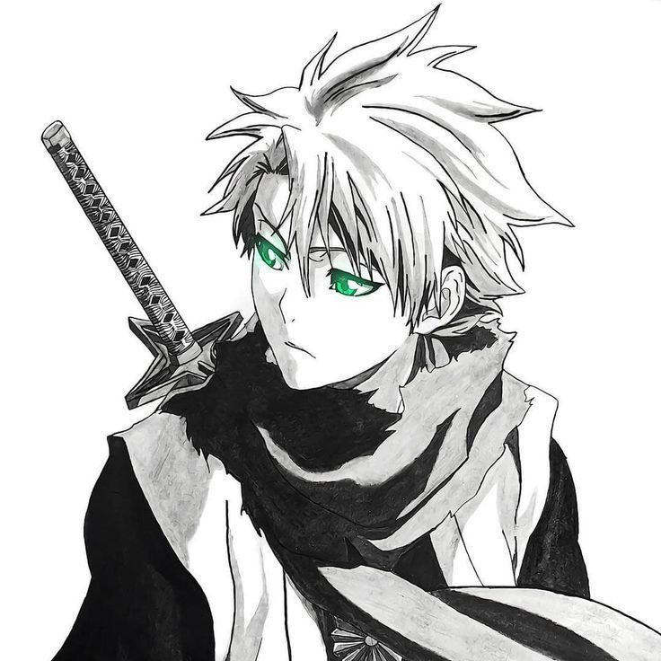
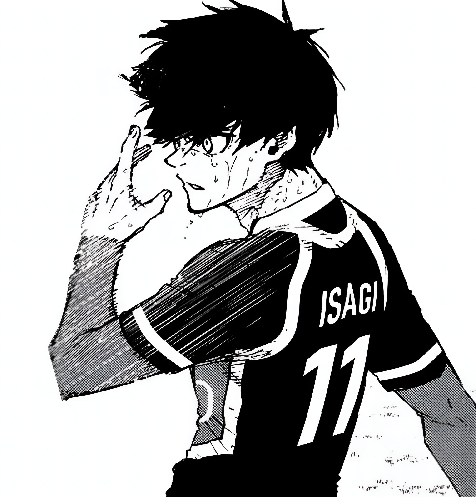
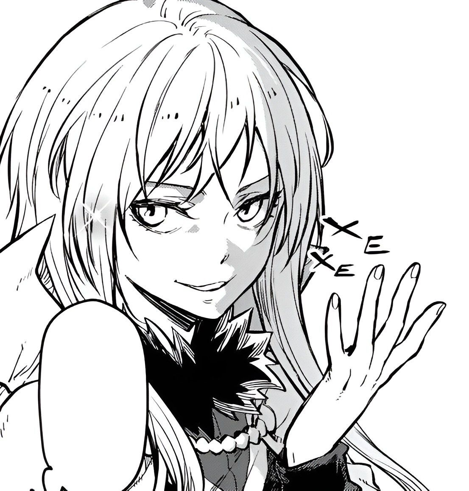
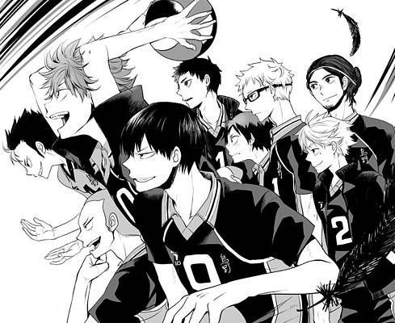

Аниме берёт свои корни из традиционной японской анимации, которая начала развиваться в начале XX века. Первые анимационные эксперименты в Японии появились еще в 1910-е годы, когда режиссёры, такие как Дзюнъити Коти, Сейтаро Китаяма и Отомо Симокава, начали экспериментировать с короткими анимационными фильмами.
В 1920-1930-е годы анимация развивалась медленно, во многом из-за отсутствия ресурсов и технологий, но также из-за того, что большая часть кинематографа была сосредоточена на военной пропаганде в предвоенные и военные годы. В этот период анимация использовалась, главным образом, как инструмент для обучения и пропаганды.
После Второй мировой войны, в 1950-е годы, анимация в Японии начала приобретать новую форму. Большое влияние на развитие японской анимации оказал Уолт Дисней и его фильмы, такие как «Белоснежка и семь гномов» (1937). Японские аниматоры переняли его методы и стиль, адаптируя их к своим собственным традициям. Особенно важной фигурой для развития аниме стал Осаму Тэдзука — человек, которого часто называют "отцом" аниме. Его манга "Astro Boy" (или "Tetsuwan Atom") стала основой для первого крупного анимационного сериала в 1963 году. Тэдзука использовал экономичные методы анимации, такие как ограниченное количество кадров в секунду и минималистичные фоны, что помогло значительно сократить затраты на производство.
В 1970-е и 1980-е годы аниме продолжало развиваться, обретая популярность не только в Японии, но и за её пределами. В этот период появились такие классические аниме-сериалы, как "Гандамы" (Mobile Suit Gundam), "Капитан Харлок" и "Мазингер Зет". Эти сериалы помогли закрепить жанр меха (гигантских роботов) в японской анимации и на международной сцене.
1980-е годы считаются «золотой эрой» аниме, когда анимация вышла на новый уровень как в плане техники, так и в плане популярности. В это время вышли культовые фильмы и сериалы, такие как "Нausicaä из Долины Ветров" (1984) Хаяо Миядзаки и "Акыра" (1988) Кацухиро Отомо. Эти работы сделали аниме узнаваемым на мировом уровне и помогли закрепить Японию как лидера в анимации.
В 1990-е годы аниме стало популярным по всему миру, благодаря сериалам, таким как "Сейлор Мун", "Евангелион", "Покемон", а также фильму Хаяо Миядзаки "Принцесса Мононоке" (1997). В это время в аниме-стиле начали появляться разнообразные жанры — от экшена и фантастики до романтики и повседневной жизни, что расширило аудиторию.
С наступлением XXI века аниме стало частью массовой культуры во многих странах, включая США и Европу. Фильмы студии Ghibli, такие как "Унесённые призраками" (2001), завоевали международные премии, включая «Оскар». Появились новые жанры и гибридные формы, такие как анимационные фильмы с элементами компьютерной графики.
В последние годы аниме продолжает оставаться важной частью мировой поп-культуры. Стриминговые платформы, такие как Netflix и Crunchyroll, активно инвестируют в производство и распространение аниме, что способствует его дальнейшему распространению за пределами Японии. Такие работы, как "Атака титанов" и "Моя геройская академия", обретают глобальную популярность, привлекая как новых, так и старых поклонников.
Сегодня Аниме — это больше, чем просто анимация. Это форма искусства, которая влияет на моду, музыку, видеоигры и другие аспекты современной культуры.